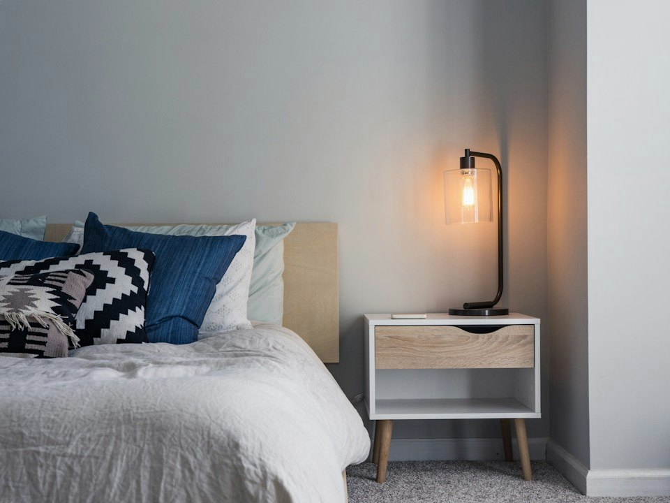

6,480+
Babies welcomed into loving arms inside our private suites.
From the first flutter of a heartbeat to your baby's golden hour in our quiet hydrotherapy birthing suites, we walk beside your family at every breath.
Babies welcomed into loving arms inside our private suites.
Dedicated exclusively to holistic women's and maternal care.
OB-GYNs, fetal medicine doctors, midwives, and IBCLC lactation leads.
On-site neonatology & specialized gentle newborn stabilization.
Select a trimester below to explore the scans, nutritional milestones, and emotional support we provide at each stage.
Early viability & dating ultrasound (weeks 7–8), non-invasive prenatal genetic testing (NIPT), nuchal translucency (NT) scan at 12 weeks, and gentle nausea & micronutrient support.
Explore Weeks 1–131. Comprehensive maternal booking blood panel & thyroid check.
2. 8-Week heartbeat confirmation & dating ultrasound.
3. 11–13 Week NT scan & cell-free DNA screening.
4. One-on-one maternal nutritionist onboarding.
High-definition 20-week fetal anatomy & echocardiography scan, gestational glucose tolerance screening, pelvic floor physiotherapy, and prenatal movement classes.
Explore Weeks 14–271. 19–21 Week high-resolution fetal anomaly scan.
2. Cervical length & uterine artery Doppler assessment.
3. 24–28 Week oral glucose screening & iron replenishment.
4. Begin prenatal yoga & partner birth workshops.

Serial fetal growth & Doppler wellbeing scans, personalized birth preference walk-through with your midwife, obstetric anesthesiologist meet-and-greet, and 36-week weekly checkups.
Explore Weeks 28–401. 28 & 32 Week 4D growth & fetal wellbeing scans.
2. Tdap & RSV maternal immunisation protection.
3. 36-Week Group B Strep (GBS) screening & birth plan review.
4. Private birthing suite orientation & lactation prep.
Designed like a five-star residential retreat with concealed medical gas panels, deep hydrotherapy pools, and gourmet postnatal dining.
Features a deep ergonomic German birthing pool, wireless waterproof fetal telemetry, aromatherapy diffuser, and circadian lighting.
Suite InclusionsOrganic flax linens, adjustable king recovery bed, clear-view co-sleeping bassinet, partner sleeper sofa, and private rain-shower bath.
Reserve Cradle SuiteIncludes a separate family sitting parlour, private landscaped terrace, dedicated night-nurse call button, and celebratory family high tea.
Tour in GalleryWhether you envision an unmedicated water birth or a calm, family-centered gentle cesarean, your birth preferences lead our clinical team.
Freedom of movement with peanut balls, birthing stools, upright positioning, intermittent auscultation, and one-to-one midwife support.
Learn MoreBuoyancy and 37°C water naturally ease labour sensations, promote endorphin release, and offer a gentle transition for your baby.
Water Birth Guide24/7 in-house obstetric anesthesiologists offering low-dose mobile epidurals that relieve pain while preserving pelvic sensation.
Pain Relief OptionsWarm theatre lighting, your chosen music playlist, clear drape option, delayed cord clamping, and immediate chest-to-chest bonding.
Gentle CesareanDedicated Vaginal Birth After Cesarean pathway with continuous wireless fetal telemetry and senior consultant supervision.
VBAC AssessmentWe warmly welcome your chosen birth partner and certified doula as integral members of your birthing circle.
Ask Our MidwivesOur care continues long after birth—nurturing your physical recovery, feeding confidence, and newborn development.
Compassionate bedside and outpatient support for latch comfort, milk supply, pumping schedules, or judgment-free combination feeding.
Book Lactation VisitComprehensive pediatric newborn screening, bilirubin checks, hearing assessment, gentle infant massage, and early immunisations.
Newborn ServicesDiastasis recti & pelvic floor rehabilitation, scar mobilization, iron/thyroid checks, and perinatal mental wellness check-ins.
Recovery GuideReal reflections from parents who welcomed their babies or found lasting gynecologic healing in our care.
"Giving birth to our daughter in the Blossom Suite felt like being in a warm candlelit spa while knowing an entire specialist team was right outside the door."
Maya & Rohan K. • First-Time Parents"When our twin pregnancy needed close Doppler monitoring, Dr. Lindqvist and the fetal medicine team reassured us at every scan. Our boys arrived healthy at 37 weeks."
Brianna & Marcus T. • Twin Delivery"Having our fertility specialist, OB-GYN, and lactation consultant under one roof meant we never felt like a chart number. Forever grateful to Bloom & Cradle."
Claire & Julien M. • Fertility & BirthCurated by our lead neonatologist and midwives: everything you actually need for labour, postpartum comfort, and your baby's first month home.
View & Download ChecklistReceive calm, clinician-written weekly pregnancy notes and seasonal women's wellness invitations. Zero spam, unsubscribe anytime.
Our 24/7 Obstetric Assessment & Birthing Triage Unit is staffed around the clock by senior midwives and consultant obstetricians—no referral needed.